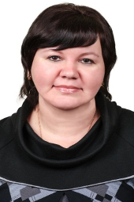

Лескова Елена Викторовна
-

-
Должность:
преподаватель
-
Образование:
высшее, Воронежский государственный университет, направление физика, 1998-2003 гг.
-
Квалификация:
Физик. Преподаватель по специальности «Физика»
-
Педагогический стаж (лет):
9
-
Общий стаж работы (лет):
16
-
Преподаваемые дисциплины:
- Физика
- Астрономия
- Электротехнические измерения
- Основы электротехники
- Электротехника и электроника
- Прикладная электроника
-
Повышение квалификации:
и веб-приложений», институт дополнительного образования ФГБОУ ВО «ВГУИТ», удостоверение о повышении квалификации № ПК-1603-256
-
Публикации:
Более 30 публикаций, в том числе в соавторстве 10.
-
Основные публикации:
- Основы электротехники: методические указания к выполнению самостоятельной работы для обучающихся по профессии 09.01.03 Мастер по обработке цифровой информации/ ВГУИТ, Факультет среднего профессионального образования. - Воронеж: ВГУИТ, 2018. - 28 с. - [ЭИ]
http://biblos.vsuet.ru/ProtectedView/Book/ViewBook/4739
- Основы электротехники: методические указания к выполнению практических работ для обучающихся по профессии 09.01.03 Мастер по обработке цифровой информации/ ВГУИТ, Факультет среднего профессионального образования. - Воронеж: ВГУИТ, 2018. - 20 с. - [ЭИ]
http://biblos.vsuet.ru/ProtectedView/Book/ViewBook/4738
- Основы электроники и цифровой схемотехники: методические указания к выполнению самостоятельной работы для обучающихся по профессии 09.01.03 Мастер по обработке цифровой информации / ВГУИТ, Факультет среднего профессионального образования. - Воронеж: ВГУИТ, 2018. - 28 с. - [ЭИ]
http://biblos.vsuet.ru/ProtectedView/Book/ViewBook/4728
- Основы электроники и цифровой схемотехники: методические указания к выполнению практических работ для обучающихся по профессии 09.01.03 Мастер по обработке цифровой информации / ВГУИТ, Факультет среднего профессионального образования. - Воронеж: ВГУИТ, 2018. - 48 с. - [ЭИ]
http://biblos.vsuet.ru/ProtectedView/Book/ViewBook/4759
- Астрономия: методические указания к выполнению самостоятельной работы для обучающихся по специальности 38.02.04 Коммерция (по отраслям)/ ВГУИТ, Факультет среднего профессионального образования. - Воронеж : ВГУИТ, 2018. - 20 с. - [ЭИ]
http://biblos.vsuet.ru/ProtectedView/Book/ViewBook/4547
- Астрономия: методические указания к выполнению практических работ для обучающихся по специальностям 38.02.04 Коммерция (по отраслям), 09.02.01 Компьютерные системы и комплексы, 09.02.04 Информационные системы (по отраслям), 09.02.07 Информационные системы и программирование, 18.02.01 Аналитический контроль качества химических соединений, 18.02.12 Технология аналитического контроля химических соединений, 19.02.10 Технология продукции общественного питания, 43.02.01 Организация обслуживания в общественном питании, 43.02.11 Гостиничный сервис, 43.02.14 Гостиничное дело, 43.02.15 Поварское и кондитерское дело для очной формы обучения / ВГУИТ, Факультет среднего профессионального образования. - Воронеж, 2018. –20 с. - [ЭИ]
http://biblos.vsuet.ru/ProtectedView/Book/ViewBook/4736
- Естествознание: методические указания к выполнению самостоятельной работы для обучающихся по специальности 38.02.04 Коммерция (по отраслям) / ВГУИТ, Факультет среднего профессионального образования. - Воронеж: ВГУИТ, 2018. - 64 с. - [ЭИ]
http://biblos.vsuet.ru/ProtectedView/Book/ViewBook/4579
- Естествознание: методические указания к выполнению практических и лабораторных работ для обучающихся по специальностям 38.02.04 Коммерция (по отраслям), 43.02.01 Организация обслуживания в общественном питании, 43.02.11 Гостиничный сервис, 43.02.14 Гостиничное дело, 43.02.15 Поварское и кондитерское дело / Воронеж. гос. ун-т инж. технол.; сост. Е.В. Лескова, М.В. Смотракова, Л.В. Грошева. – Воронеж: ВГУИТ, 2018. – 60 с. - [ЭИ]
http://biblos.vsuet.ru/ProtectedView/Book/ViewBook/4736
- Физика: методические указания к выполнению самостоятельной работы для обучающихся по специальностям 18.02.01 «Аналитический контроль качества химических соединений» 19.02.10 «Технология продукции общественного питания» 38.02.04 «Коммерция» 43.02.11 «Гостиничный сервис» 43.02.01 «Организация обслуживания общественного питания» 42.02.01 «Реклама» 09.02.04 «Информационные системы (по отраслям)» 09.02.01 «Компьютерные системы и комплексы» 15.02.01 «Монтаж и техническая эксплуатация промышленного оборудования (по отраслям)» / ВГУИТ, Факультет среднего профессионального образования. - Воронеж : ВГУИТ, 2016. - 23 с. - [ЭИ]
http://biblos.vsuet.ru/ProtectedView/Book/ViewBook/3172
- Физика: методические указания к выполнению самостоятельной работы для студентов 1 курса дневной формы обучения / ВГУИТ, Факультет среднего профессионального образования. - Воронеж : ВГУИТ, 2016. - 26 с. - [ЭИ]
http://biblos.vsuet.ru/ProtectedView/Book/ViewBook/2428
-
Организационная работа:
- председатель методического совета ФСПО
- член совета факультета СПО
- участие в заседаниях и семинарах в соответствии с планом ЦК
- заполнение рейтинга обучающихся, ППС
- член и секретарь ГЭК
-
Контактная информация:
Тел.: 8-920-469-29-32, e-mail:Leskova.ev78@inbox.ru
-
Дополнительная информация:
Опыт профессиональной деятельности: ЗАО "Воронежский алюминиевый завод"